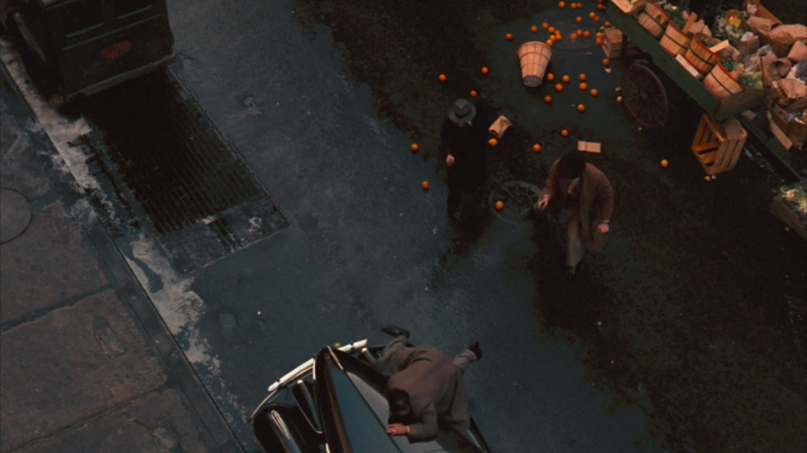

hello weirdo I'm Ahmad Khaleel Almahasneh
im 23 years old, from tafila "I KNOW!!". as a fellow wierdo my edication was like the both of us, i studiud different fields:
as for work experiences i didn't work in engineering but i worked as:
i specielize in Black and white and concept Photography, with very Good portriot photography backgroung. right now I'm working on a new project in my life which is becoming a website developer, and i want to be a filmmaker, because I love story telling.and i would like to share with you my top 10 movies of all time since by now you already know that i am a movie geek:
